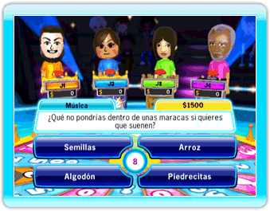
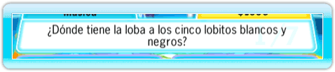
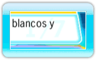
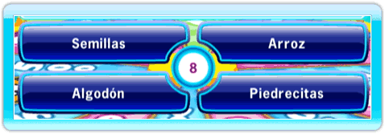
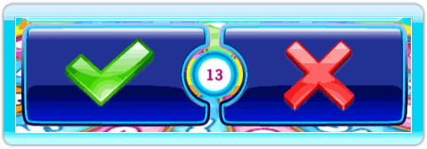

14 |
Interfaz del juego |
 |

La mano es tu cursor. El número que se muestra en la mano indica el jugador (de jugador 1 a jugador 4). La mano indica a dónde está apuntando el mando de Wii.
En el minijuego Linterna, el mando de Wii actúa como una linterna y el cursor se convierte en un círculo que te permite ver en la pantalla oscura. El color de la circunferencia del círculo diferencia a cada jugador:
El cronómetro, situado en el medio de la sección de respuestas, indica el tiempo que queda para responder a la pregunta.
En la parte superior izquierda de la pregunta se muestra a qué categoría pertenece esta.
En la parte superior derecha de la pregunta se muestra la cantidad de dinero que ganarás si eres el primero en elegir la respuesta correcta.
 El centro del área muestra la pregunta actual.
 El indicador de preguntas muestra el número de preguntas que ya se han contestado en la ronda actual.
 En la mayoría de las preguntas, tendrás 4 respuestas entre las que elegir. Escoge la que creas que es la correcta.  Para las preguntas de Verdadero o falso, tienes dos respuestas (la marca de aceptar es verdadero y la X es falso) para elegir. Escoge la que creas que es correcta. |


 |
 |
 |